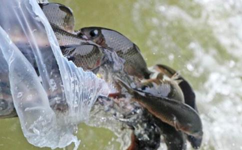

印光大师一向不主张于佛菩萨诞期，及各朔望好日期放生。此事已成铁案。捕生者特为放生者多捕，则买而放者，亦多有因放而捕来耳。然人情多好名，此各日放生则有名。又人情多以因循了事，若不于此各日放，则便不肯特为买放矣。光虽为人如此说，究亦只成空谈。生亦不可乱放。放之于江、则无不可。放之于池、凡害鱼之鱼、亦放其中、是放贼于人民之聚处、则群鱼皆为彼之食料。然欲一一如法、实难做到。是宜极力提倡戒杀吃素、以为根本解决之法。基于放生、略为举行、以期人各体会放之之意而已。若尽量放、而设法未能合法、则亦只功过不相掩耳。放生之举、事虽为生、意实为人。人若止杀、则固用不着此种作为。然人食肉之心愈盛、不设此举、久而久之、将举菲洲之野蛮行为、遍行于世。可不预为设法、令彼嗜杀嗜肉之人、同生反躬自省之诫乎。放生者，但以不忍杀生为念、不能计及彼之食生物与否。鱼多食小鱼、及小水虫。若如所谓、则放一大鱼必日杀无数小鱼，水虫。则放一以杀多、是放之功少过多也。然穿上蛇獭、究无几何。即不能尽生物皆买放、则似宜从缓、庶免闲议。放生以至诚为彼念佛持咒为本。所有仪式、亦不过表示法相而已。如有其人。固宜按仪式行、否则但竭诚念佛即已。又凡生欲放、若夏日当宜速行。倘泥于等齐按仪式作法、或至久经时刻、有碍生命。居士放生宜从省略。若真诚无伪僭之心、即按仪式行、亦非绝不可行。若妄效僧仪、则成我慢矣。法固圆融、当善用心。
放生一事，原为感发同人戒杀护生之心，实行自己恻隐不忍之念而已。世人多矣，心行各异，纵不能全皆感动，即感动一人，彼一人一生，即少杀若干生命，况不止一人乎。至谓小鱼被大鱼所食，即放之长江，亦难免不遭网罟。此种计虑，似乎有理，实则为阻人善念，助人杀业。其人幸得为人，或不至身受杀戮，故作此无理之理，以显己之智，能折伏放生者。使彼为鱼，及诸生命，当受杀时，断断不肯起此种想念。唯冀有人救己之命，别无他种救亦恐或后来又被别物所食，别人所得，唯愿甘心受戮，免致后复遭殃等想。果能当此时，作此想念，尚不足为训。况万万不能，则日月当东行，天地当易位矣，言可妄发乎。大鱼食小鱼，固有此事。放之又遭捕，亦不能无有。若谓小鱼被大鱼食尽无余，则无此事理。放者尽被人复捕去，亦无此事理。何得如是过虑。譬如救济难民，或与一衣，或与一食，亦可不至即死。在彼则当曰，此一衣一食，何能令彼终身温饱，与之有何利益。不如令彼冻饿而死，便可不至长受冻饿矣。又如强盗劫人，有力者为之捍御。彼将曰，汝若能捍御彼一生，则为甚善。唯捍御一时，究有何益。反不当此时作此想念，而于无关痛痒时，作此阻人善念，启人杀机之语。其人来生，若不自受其报如任彼抢劫一空，后来不至再被抢劫之为愈也。父母之于子，常常抚育，而慈母不能抚身后之子。彼将谓，既不能抚育，不如杀之之为愈乎。君子修德，不以善小而不为，不以恶小而为之。彼必期于万无一失，方肯行放生，则令世人尽寿皆不行戒杀放生之事矣。其人将来必膺万无一人能救己于死也，哀哉，痛哉。（续编卷上复愚僧居士书）
买物放生
买物放生。与布施同。须善设法。勿立定期。勿认定地。勿议定物。随缘买放。生得实益。若定期、定地、定物、则是促人多捕矣。
放生
放生一事，原为启发现人之善心，以期戒杀吃素，普令含识，各得其所，各尽天年。近之则息杀因，远之则灭杀果。小之则全吾心之纯仁，大之则弭世界之杀劫。且勿以为不急之务，而漠然置之也。
杀生不异杀佛
一切众生，皆有佛性，皆当作佛。佛视一切众生皆是佛，故梵纲经云，我是已成佛，汝是未成佛，若能如是信，戒品已具足。以能信自己是未成之佛，必定要改恶修善，发自利利他之大菩提心，以期断尽烦惑，亲证即心本具之真如佛性。能信一切六道众生是未成之佛，必定要极力劝导，互相维持于同类，决无相争相杀之之恶作。必定要戒杀护生，大设方便于异类，决无食彼益我之惨心。人由不知自己，与一切众生，皆是未成之佛，故不惜杀人盈城盈野以相争，与杀彼之身，以期悦我之口腹也。世人杀生习以为常，大小事体，皆须行杀。祭神祀祖，养亲待客，无肉则不能为礼。以极苦极惨之事加诸物，用表我之诚垦孝敬。在迷情边论，则尚有可取。在实际上论，则大为可怜也。以一切众生，从无始来。轮回六道，互为父母、兄弟、妻子、眷属，互生。互为怨家对头，循环报复，互杀。佛于诸大乘经中，屡为劝诫，而见闻者少。即得见闻，而信受奉行者更少。于是佛以大悲，现诸异类。供人杀食。即杀之后，现诸异相，俾一切人，知是佛现，冀弭杀劫，以安众生。如蛤蜊、蚌壳牛腰、羊蹄，猪齿、鳖腹，皆有佛栖。惊人耳目，息世杀机，载藉所记。何能备述。未杀之前，均谓是畜，即杀之后，方知是？。是知杀生，不异杀佛，即非佛现，亦未来佛，杀而食之，罪逾海岳，急宜痛戒，庶可解脱。须知人物虽异，灵蠢互性，蠢人识暗，灵物智明。五伦八德，固不让人，其诚挚处，比人更深。敢以我强，杀食其肉，致令未来，常受人食。历观史藉，自古及今，凡利人利物者，子孙必定贤善发达。凡害人害物者，子孙必定庸劣灭绝。故孔子之赞周易曰。积善之家，必有余庆，积不善之家，必有余殃。余庆余殃者，正庆正殃之盈余也，正庆正殃，乃积善积不善之本人，受于来生后世，比余庆余殃，当超过百千万倍焉。人若知此，断不肯以一时之小快愉，致永受大祸害于无穷也。
祭祖用素
食肉一事，大是怪事，但以习行即久，不知其非，凡以为礼。故祭天地，祭祖宗，奉父母，待宾客，皆以肉为表示诚孝恭敬之物。世间圣人，不说三世因果，六道轮回之事理，亦随顺俗情而行，又复谆谆于仁民爱物之道。推圣人爱物之仁，可知以肉表诚孝恭敬之非义也。夫表我诚孝恭敬，当以极慈祥清净之物方可。何可以猪、羊、鸡、鸭、鱼、虾、等极秽污之物，又复活活杀死。此等诸物死时，其惨痛怨恨，难以言宣，有仁心者，何忍以杀彼诸物，表我诚敬乎。试思此之诚敬，为顺理之诚敬乎，抑悖德之诚敬乎。仁人祭祖，尚求仁者之栗，今求屠刽之肉，是焉得为诚敬乎。由是言之，杀生以祭天地，是逆天地好生之德，天神地祗，岂以此诸秽物为香洁，而歆飨之乎。盖祭者，欲藉此以食其祭品耳。至于祭祖宗，奉父母，待宾客，当思有益于祖宗、父母、宾客，方为合理。今以极残酷之杀业，为我致诚敬之表示，令祖宗、父母、宾客，同膺杀祸，此之诚敬，是祸害，非诚敬也。而况一切众生，皆是过去父母，未来诸佛、不加救济反为表我之诚而加杀害乎。梵纲经云，若佛子，以慈心故，行放生业、一切男子是我父，一切女人是我母，我生生无不从之受生。故六道众生，皆是我父母。而杀而食者，即杀我父母。楞严经云，以人食羊，羊死为人，人死为羊，死死生生，互来相啖，恶业俱生，穷未来际。汝负我命，我还汝债，以是因缘，经百千劫，常在生死。入楞严经，断食肉品云，一切众生，从无始来，在生死中，轮回不息。靡不曾作父母、兄弟，男女、眷属，乃至朋友、亲爱、侍使，易生而受鸟兽等身，云何于中杀之而食。世人只知现世，不知过去未来，故杀彼之身，充我之复，以为理所应当。若知其生生世世，互相酬偿，及我与此诸物类，互为父母、兄弟、眷属，互生。互为怨家对头，互杀。勿道不敢自食，即祭天地、祖宗、奉父母，待宾客。亦不敢用肉。以肉乃精血所成之物，谓天地神祗飨此，何异诬人食污。祭祖、奉亲、待客，何异杀过去祖宗、父母、宾客，奉现在祖宗、父母、宾客，又令祖宗、父母、宾客，永劫常受杀报乎。且勿谓人畜轮回，渺茫难稽，史鉴所载，多难胜数。即就近见闻，亦复不少。固当深信，勿造杀业，以既造杀业，必受杀报。经云，菩萨畏因，众生畏果。畏因，则不造杀因，自无杀报。畏果，则徒劳畏惧，了无所益。